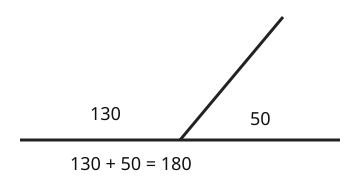

Part of Angle Facts. Answer in the chat (1: ..., g: c), add sure or guess after any answer, and say done when finished.
Last time: one of two angles on a straight line is 130 degrees. What is the other? You said a) 50, and it is.

To find a missing angle you need a total to take from. A straight line is a half turn, so the angles along one side of it add up to 180 degrees (notes 1, 2).
Q1. On a straight line, one angle is 72 degrees. What is the other?
108 (sure)
Right: 180 - 72 = 108 (notes 2).
Q2. Three angles sit side by side on a straight line: 40, 85 and x. What is x?
55 (guess)
Right: 40 + 85 = 125, and 180 - 125 = 55 (notes 2).
Q3. In your own words: why do angles on a straight line add up to 180?
a straight line is half a turn, and half a turn is 180 degrees
Right: the line is a half turn (notes 1, 2).
You can now find a missing angle on a straight line.
Four angles meet at a point: 90, 90, 90 and x. What is x?
b (guess)